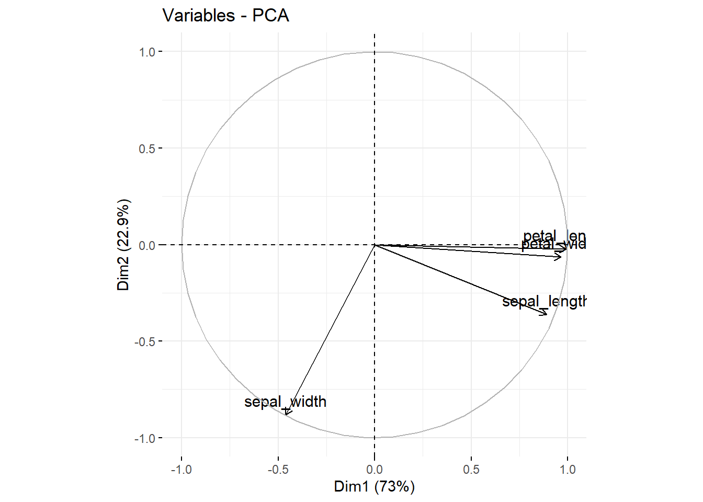
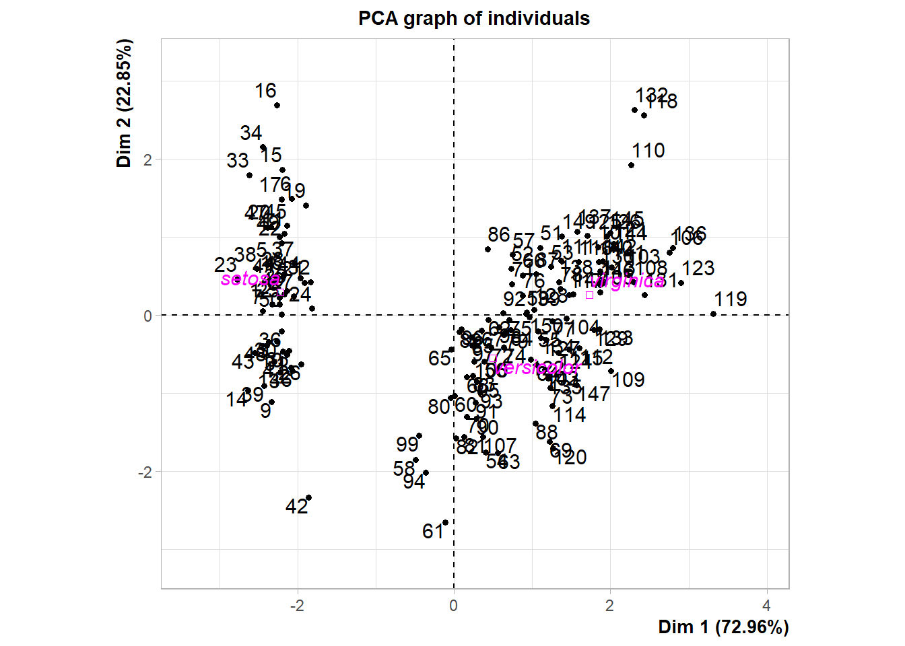
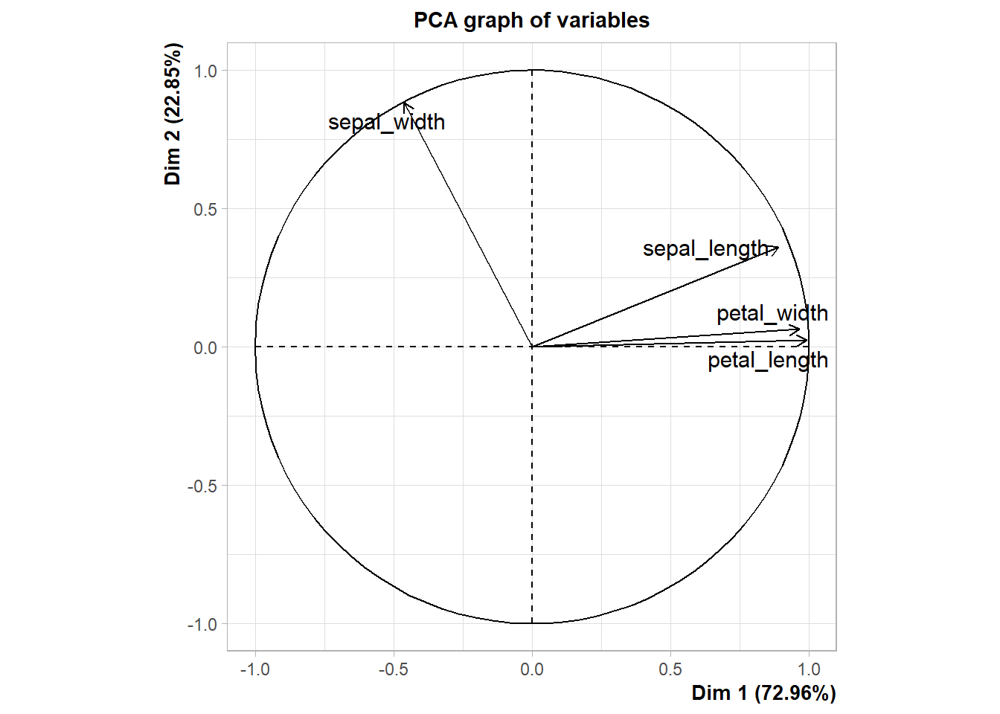
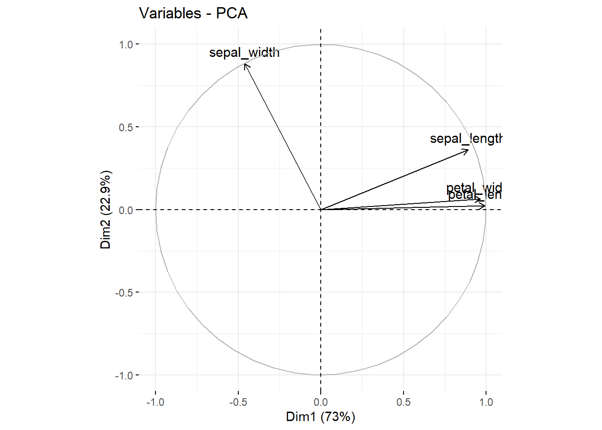
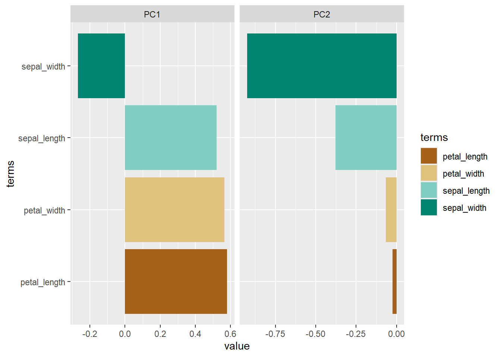

# pacotes
library(tidyverse)
library(janitor)
library(FactoMineR)
library(factoextra)
library(tidymodels)
library(corrplot)
library(caret)
library(broom)
library(patchwork)
#dados
data(iris)
iris <- iris %>% janitor::clean_names()Interpretando PCA Analáse de componentes principais
Exploração de dados
O que é a interpretação PCA Análise de Componentes Principais
Envolve compreender como os dados originais são transformados e representados em um novo espaço de dimensões reduzidas.
Verificar a variância explicada de cada componente principal.
Analisar os componentes principais como loadings, scores, rotations, coordenadas, cos2 entre outros elementos.
Qual o objetivo
Compreender as principais características dos dados representadas pelas direções de maior variância na PCA.
Compreender a existência de correlações ou seja, se houver duas ou mais variáveis altamente correlacionadas, estas provavelmente serão representadas por um único componente.
Verificar a existência de outliers, que é representado na PCA onde um ponto pode estar muito longo do centro da distribuição.
De onde vem a demanda
Necessidade de resolver o problema da maldição da dimensionalidade que são situações onde o número de variáveis(dimensões) é muito grande, e o volume de dados necessário para obter estimativas precisas também aumenta exponencialmente. Isso pode levar a problemas de superajuste e dificuldade de encontrar padrões significativos nos dados.
Dificuldade de definir variáveis mais importantes o que pode levar a problemas no ajuste de modelos ou instabilidades em modelos de predição.
Necessidade de reduzir ruído e variabilidade nos dados os quais podem afetar na precisão dos modelos estatísticos e machine learning.
Necessidade de otimizar o armazenamento e processamento dos dados, principalmente quando se lida com conjuntos de dados muito grandes.
Necessidade de melhorar a visualização de dados facilitando a compreensão dos padrões e relações entre as variáveis.
Como fazer
Esses são os pacotes e dados que serão usados nesse exemplo
PCA usando a função prcomp da base R
#pca_prcomp
pca_iris_prc <- iris %>% select(-species) %>% prcomp(center = TRUE, scale. = TRUE)
#plot
fviz_pca_var(pca_iris_prc)
#pca_result_prcomp
loadings_prc <- pca_iris_prc$rotation
scores_prc <- pca_iris_prc$x
variance_prc <- (pca_iris_prc$sdev)^2PCA usando o pacote factomineRe factoextra
#model pca
pca_iris_fcm <- iris %>% PCA(scale.unit = TRUE, quali.sup = 5, graph = TRUE )

#pca_result_factominer explore
loadings_fcm <- sweep(pca_iris_fcm$var$coord,2,sqrt(pca_iris_fcm$eig[,1]), FUN = "/")
scores_fcm <- pca_iris_fcm$ind$coord
variance_fcm <- pca_iris_fcm$eig
#plot
fviz_pca_var(pca_iris_fcm)
PCA usando o pacote tidymodels
#pca tidymodels
pca_iris_tdm <-
iris %>%
recipe(species~.) %>%
step_normalize(all_numeric_predictors()) %>%
step_pca(all_numeric_predictors()) %>%
prep()
summary(pca_iris_tdm$steps) Length Class Mode
[1,] 9 step_normalize list
[2,] 13 step_pca list#pca_result_tidymodels
loadings_tdm <- pca_iris_tdm$steps[[2]]$res$rotation
scores_tdm <- bake(pca_iris_tdm, new_data = NULL)
variance_tdm <- (pca_iris_tdm$steps[[2]]$res$sdev)^2
#plot
data_plot <- tidy(pca_iris_tdm,2)
data_plot %>%
filter(component %in% paste0("PC", 1:2)) %>%
ggplot(aes(x=value, y=terms, fill = terms))+
geom_col()+
facet_grid(~component, scales = "free")+
scale_fill_brewer(palette = "BrBG")
Conclusão usando os diferentes tipos de pacotes e funções e responendo a questão. Será que há diferença nos resultados quando uso prcomp, factomineR ou tidymodels ?
Loadings usando os diferentes pacotes sendo prc = prcomp, fcm = factominer e tdm = tidymodels
#conclusão
loadings_prc %>% head() PC1 PC2 PC3 PC4
sepal_length 0.5210659 -0.37741762 0.7195664 0.2612863
sepal_width -0.2693474 -0.92329566 -0.2443818 -0.1235096
petal_length 0.5804131 -0.02449161 -0.1421264 -0.8014492
petal_width 0.5648565 -0.06694199 -0.6342727 0.5235971loadings_fcm %>% head() Dim.1 Dim.2 Dim.3 Dim.4
sepal_length 0.5210659 0.37741762 -0.7195664 -0.2612863
sepal_width -0.2693474 0.92329566 0.2443818 0.1235096
petal_length 0.5804131 0.02449161 0.1421264 0.8014492
petal_width 0.5648565 0.06694199 0.6342727 -0.5235971loadings_tdm %>% head() PC1 PC2 PC3 PC4
sepal_length 0.5210659 -0.37741762 0.7195664 0.2612863
sepal_width -0.2693474 -0.92329566 -0.2443818 -0.1235096
petal_length 0.5804131 -0.02449161 -0.1421264 -0.8014492
petal_width 0.5648565 -0.06694199 -0.6342727 0.5235971Scores usando os diferentes pacotes sendo prc = prcomp, fcm = factominer e tdm = tidymodels
scores_prc %>% head() PC1 PC2 PC3 PC4
[1,] -2.257141 -0.4784238 0.12727962 0.024087508
[2,] -2.074013 0.6718827 0.23382552 0.102662845
[3,] -2.356335 0.3407664 -0.04405390 0.028282305
[4,] -2.291707 0.5953999 -0.09098530 -0.065735340
[5,] -2.381863 -0.6446757 -0.01568565 -0.035802870
[6,] -2.068701 -1.4842053 -0.02687825 0.006586116scores_fcm %>% head() Dim.1 Dim.2 Dim.3 Dim.4
1 -2.264703 0.4800266 -0.12770602 -0.02416820
2 -2.080961 -0.6741336 -0.23460885 -0.10300677
3 -2.364229 -0.3419080 0.04420148 -0.02837705
4 -2.299384 -0.5973945 0.09129011 0.06595556
5 -2.389842 0.6468354 0.01573820 0.03592281
6 -2.075631 1.4891775 0.02696829 -0.00660818scores_tdm %>% head()# A tibble: 6 × 5
species PC1 PC2 PC3 PC4
<fct> <dbl> <dbl> <dbl> <dbl>
1 setosa -2.26 -0.478 0.127 0.0241
2 setosa -2.07 0.672 0.234 0.103
3 setosa -2.36 0.341 -0.0441 0.0283
4 setosa -2.29 0.595 -0.0910 -0.0657
5 setosa -2.38 -0.645 -0.0157 -0.0358
6 setosa -2.07 -1.48 -0.0269 0.00659Variância usando os diferentes pacotes sendo prc = prcomp, fcm = factominer e tdm = tidymodels
variance_prc %>% head()[1] 2.91849782 0.91403047 0.14675688 0.02071484variance_fcm %>% head() eigenvalue percentage of variance cumulative percentage of variance
comp 1 2.91849782 72.9624454 72.96245
comp 2 0.91403047 22.8507618 95.81321
comp 3 0.14675688 3.6689219 99.48213
comp 4 0.02071484 0.5178709 100.00000variance_tdm %>% head()[1] 2.91849782 0.91403047 0.14675688 0.02071484Pra onde vai quem é o cliente
São utilizados como suporte em documentos técnicos e científicos.
São utilizados como variáveis substitutas não correlacionadas em modelos machine learning.
Qual o resultado
Facilita a análise, compreensão, explicação e comunicação dos dados.
Possibilia a compreensão melhor dos dados auxiliando na solução de um problema prático ou científico.
Melhora a consistência na apresentação de dados.
Vídeo tema para este post